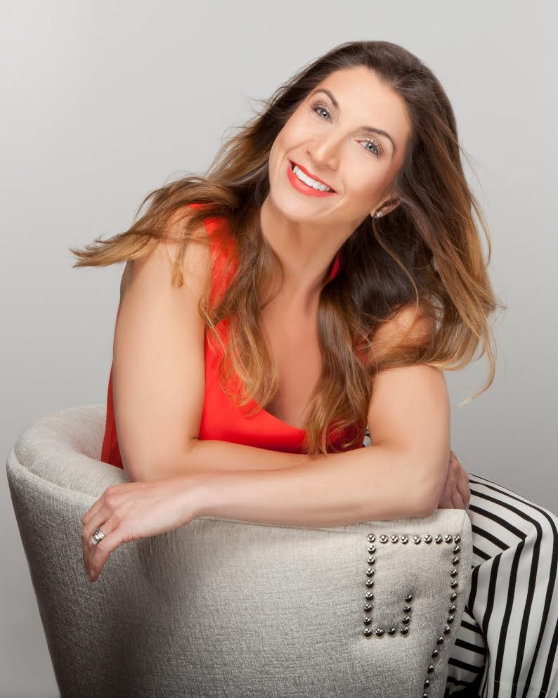

Why You Need Us
Now some people think hiring a stylist is unnecessary, but in reality, many of us don't have time or energy to clean out our closets or buy that one white t-shirt, we always say we need. Free time is limited today and we rather spend these opportunities with our family and friends, going to the beach with our kids, going out to that new restaurant in the city, or even squeezing in that extra 2 hours of sleep .. I mean don't all those things sound WAY more exciting than wasting time in and overly air conditioned mall or in your disheveled closet???
Whether you are; starting a new job and unsure of what to wear, a baby making machine with a body that doesn't stop changing or someone who travels for work so often that they can't even plan what they're doing the next day- we don't discriminate. Every client of ours have different commitments and lifestyles but in the end, the one commonality they do have, is that they all value feeling good inside and out, and know that confidence is key in handling whatever life obstacles present themselves. Whoever you are and whatever category you fall into, we're here to help all your fashion and styling needs so you have ONE less thing to worry about. You'll thank us later!
What We Do
As a personal stylist and wardrobe consultant, we will work together to develop your own personal style and curate a wardrobe that will help you feel confident in taking on your lifestyle needs.
Consultation |
Wardrobe Editing |
Personal Shopping |
Additional Services |
This is the first step in getting to know our clients. Whether it be over the phone, via email or over cocktails, we will sit down to discuss the best way we can help solve your fashion and wardrobe goals.
Through this process we will discuss a variety of items including:
- What initial services you were interested in.
- Your typical shopping budget: seasonal (spring/summer, fall/winter) or annual.
- Personal style influences you aim to replicate.
- Your favorite clothing brands and list of stores you shop in both online and in person.
- The most comfortable style shapes you enjoy wearing and clothing colors you gravitate to.
- Identify the HONEST size of your closet space to allocate necessary time for thorough wardrobe organization.
- Come up with a schedule for all future services (ex: personal shopping days, event date etc).
Pricing :
- FREE! (as long as you hire me for another one of my services!)
- $50 for those who don't want to commit to our services but would like professional advice to organize their wardrobe and ideas on how to incorporate styling/shopping/ brand suggestions on their own.
This is really the FUN part of my job, where I get to hang out with you in your closet. I won't lie, some people find this very daunting but it's an essential step in trying to understand our client's lifestyles. Together we will go through ALL of your clothing and decide what pieces are the keepers, tossers and the unknown treasures you had no clue you had. Then we will create a list of what essential pieces we will need to focus on to complete your existing wardrobe.
Wardrobe editing involves several factors and requires several hours, depending on the size and space you store your clothes. Whether you are a compulsive purger or an emotional hoarder, we'll organize your closet and I'll try my best to help you through that mid life crisis moment, when you realize that some things are just better off being laid to rest, permanently!
Once the process is finished, you will have:
- An organized wardrobe space, with clothing grouped by function for easy grab and go.
- Eliminated all outdated pieces (clothing and accessories) that are NEVER making a comeback.
- New outfits created with the remaining kept items.
- A created "wish list" of items you can buy to complete the holes in your new wardrobe according to your style goals.
- We'll also provide you with some suggested trend options, you might want to explore, given the existing and upcoming seasons.
Pricing :
- $450 for up to 5 hours service
- $100 for each additional hour (other family members, spaces left undone etc.)
- $650 includes 2 hours of personal shopping to fulfill your "wish list" (personal shopping $150/hr normally, done 1 on 1)
Personal shopping is one of our specialty services. No matter what your shopping habits are; whether you prefer to shop together one on one, feel more comfortable trying on items in your home, or juggling Super Mama multiple schedules with little time to waste, we will come up with the best and most convenient plan to get you the "goods."
Based on your preferred method of shopping, you will have:
- Personalized curated pieces grouped by style and size selected for you beforehand.
- All "wish list" items picked out and ready to try.
- A list of full outfits including matching accessories based on all new and older pieces in your existing closet.
- Suggested pieces, worth a try on to take your look to the next level.
Pricing :
- $150/hour one on one
- $300 remote service until final choices satisfy your needs
- $400 home delivery with returns included.
For those OCD types, who don't need wardrobe editing help, we have other services that might be better suited to you, including; seasonal wardrobe updating (fall/winter, spring/summer), special event styling (weddings/formal/graduation etc) as well as a holiday styling package.
Seasonal Wardrobe Updating helps to keep our clients looking polished and up to speed with the current trending seasons.
- We will update your wardrobe with the industry's "go-to" pieces that will take you into the new season.
- We will make sure to stick with the stores and brands you have become most comfortable with.
- Create outfits based on new purchases, building on what you already have from previous seasons.
- Suggest new designer items, we think you might want to try.
Special Event Styling (weddings/graduation/formal events) can also be arranged for our clients who want shake things up and are unsure of what to wear for a particular themed party. Whether you want to buy yourself a whole new outfit, or update an existing one from your current wardrobe, we'll make sure you look fabulous and truly timeless for that special occasion.
** hair and makeup suggestions can be provided and use of our in-house stylists are available with inquiry.
A Holiday styling package is available as well. No matter where you're headed, we' ll get that wardrobe organized so you have ONE LESS person in your family to pack for. We will help you create an easy wardrobe to select from taking into consideration: the location of your trip, current trends suited to the climate and the most comfortable options for all your planned activities. Included in this service is a "go-to style guide" to take with you so everything is preplanned, organized, easy and stress free during your trip.
Pricing :
- $150/hr shopping with the client in store.
- $150 per special event.
- $300, all suggested pieces selected online and sent to the client via email, until service is completed.
- $400, delivery and return for selected items without the client (includes travel costs for all trips necessary).
- $600, one year of seasonal wardrobe updates, includes an in house wardrobe inventory.
Sayra Who?
I'm Sayra Ashqar, born in the effortlessly cool city of Montreal, Canada into a family of die hard garment industry entrepreneurs. After attending grad school in Miami, Florida, I moved to Manhattan to begin a career managing a well known, mental health treatment center for people with Co-Occurring disorders. My friends and family, never understood how I fell into that line of work. I had always been the girl with the outspoken personality and bold sense of style, far better suited towards the family business. Looking back at those years, I knew I wanted a challenge and despite the grueling hours, constant political setbacks and little pay, the reason I stayed in that industry was solely a result of an overwhelming sense of happiness that came over me after watching one client after another achieve their personal milestones.
Fast forward, a few years later and an eventual move from the city, to the suburbs of Westchester, my husband and I decided to start our family. I went back to work for a few months, but quickly after having my first child, I decided to become a full time mom and watch all those important "first's" that people always tell you about. I had no idea how much my lifestyle and identity was going to change. One day it was high heels, tailored suits and happy hours in the city and then all of a sudden my world was turned upside down, with a house filled of noisy toys and pacifiers in any possible hidden corner you can imagine. As a Super Mama, my lifestyle is complete organized chaos, but whether it's cleaning up 10 spills of milk in under 5 minutes, a 5 minute pitstop to the grocery store that turns into 2 hours, or out on a sexy date night with my husband, I always want to look and feel fabulous.
I created Unapologetic Stylist, after realizing that many of us go through similar life transitions and lose ourselves or stop prioritizing our sense of style as a result. Sometimes it's inevitable, while we try balancing multiple duties between our personal and professional lives. Life just gets complicated and messy but let's just be honest here- it's way easier to deal with crap when you don't look like it yourself!
The Gossip
We have been honored to work with some amazing women in the past, all from different backgrounds and various careers. Check out what they have to say:
"A friend of mine recommended that I reach out to Sayra for an upcoming New York trip I had planned over the summer time. I was going to be travelling into the city over a few days with my family and I didn't want to waste time shopping the stores with so many other activities planned. I asked Sayra to look for specific items that I had my eye on for a few months and have them delivered to my hotel when I landed. She met me at the hotel and we tried on everything, including other pieces, I thought i'd never see myself in, but once I put some of them on- I felt pretty cool. She has great taste and all the pieces I got were perfect additions to my wardrobe. I get compliments on my clothes all the time, which is a major plus at my age. She's always available to email when i have a styling question and i've referred her to many of my friends since then. I'm so happy she started this company because it's clear she can do this job in her sleep."
"Funny enough, I literally met Sayra one day, while shopping at Saks Fifth Avenue. She and I were trying on shoes right next to each other and I decided to ask for her opinion on my choice. I felt so comfortable talking to her that I told her, I was shopping for an outfit for the upcoming graduation party I planned for my daughter, but didn't know what I was really aiming "to look like" that night. Luckily, she had the afternoon off, having completly sabotaged her entire afternoon but after 3 hours and 1 coffee stop, I came home with a great dress and some helpful styling ideas to help accessorize it. She came over a few weeks later, and we put together the whole outfit, with my own shoes and jewelry (with earrings I had actually never worn, but sat in my jewelry box collecting dust). The whole "look" turned out better than I could ever expect. I definitly recommend reaching out to her when you're in the same position I was, she's so much fun and easy to work with, you won't be disappointed."
"Sayra is the absolute best! I was in a style rut and desperately needed someone to edit my wardrobe and show me how to put together some killer go-to outfits. I was in awe of how easily Sayra shopped my closet and suggested must-haves for the season and basics to buy that would update and fill holes in my wardrobe. She truly has a sixth sense for fashion and an effortlessly cool style that I wanted to emulate. After one afternoon with Sayra, I went from feeling like I had nothing to wear to feeling excited about a closet full of possibilities!"
"A friend of mine recommended I book a session with Sayra because I was going back to work after having 2 kids and I was drowning in outdated clothes ranging from size 2-10! Sayra came to my rescue by helping me edit my wardrobe: i.e. let go of clothes I had since College or wore 9 months pregnant. Now as a working mom, I don’t have time to swift through a pile of clothes, so having only key pieces hanging helps me be more efficient and look more put together! She even went above and beyond by creating work & leisure outfits with the clothes I have; and what trends I should watch for to complete my closet. Sayra is like a style superhero- with the cape and high boots!"
The Price
| Service Offering | Summary of Services | Delivery Method | Price | Package Pricing |
|---|---|---|---|---|
| Consultation | Style profile assessment. | In-person or Remote | $50 | Free with other services. |
| Wardrobe Editing | Closet organization. Wish list of missing pieces to add. Outfit pairings of existing items. |
In-person | $450 up to 5 hours of service, $100 for additional hours/people | $650 for 5 hours plus 2 hours of personal shopping |
| Personal Shopping | Personalized curated wardrobe based on proportions and brand preferences. | In-person or Remote | $150/hour in person $300 remote $400 delivery and return. |
Included 2 hour session in Wardrobe Edit service. |
| Seasonal Updates | Selection of pieces for new season. Complete look suggestions based on existing wardrobe and new items. |
In-person or Remote | $150/hour in person $300 remote $400 delivery and return. |
$600 in-house wardrobe inventory and seasonal updates for 1 year (s/s, f/w) |
| Special Event Styling | Outfit selection/ideas. Makeup & hair styling suggestions. |
In-person or Remote | $150/hour in-person $300 remote |
|
| Holiday Styling | Wardrobe chosen for your trip, including suggestions for purchase and a style guide to take away. | In-person or Remote | $150/hour in person $300 remote $400 delivery and return. |
The Hotline
If you would like to go on this incredible fashion journey with our team, please fill out all requested information below and you can expect a follow up within 48 hours. Our preferred method of contact is via email in which, we will then coordinate a call time to discuss what you are looking to achieve and how we can best tailor our services to your needs.
** Please note that all client information collected will remain confidential **